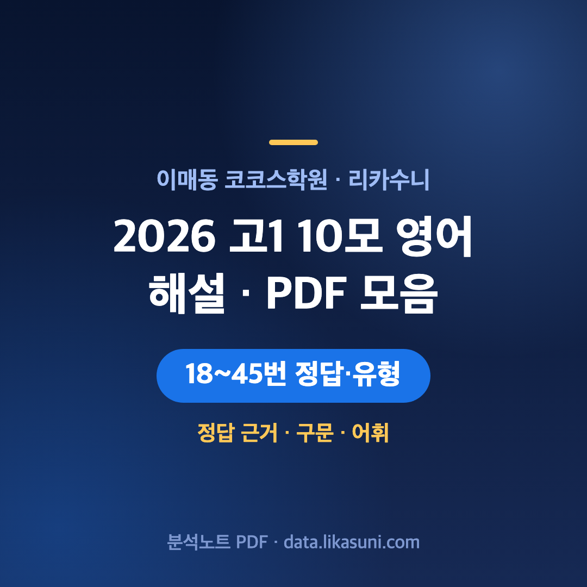

2026 고1 10모 영어 해설 모음이에요. (2026년 10월 고1 전국연합학력평가 영어 18~45번)
번호별 정답·유형·핵심 내용을 한눈에 정리했고, 문항별 해설·분석노트 전자책과 문제지·정답 pdf 받는 곳은 글 아래에 있어요.
안녕하세요, 이매동 코코스학원 리카수니 원장입니다.
10월 모의고사를 다시 보는 학생이 많아서 고1 영어 독해 18~45번을 한 글에 모았어요. 시험지를 옆에 펴 놓고 보세요.
· 📘 18번 목적 ① – 디지털 마케팅 연수 비용 일부를 회사가 지원해 달라는 요청 편지
· 📘 19번 심경 ① – 방학 전날 신났던 Rafe가 여름 학교에 가야 한다는 말을 듣고 실망하다
· 📘 20번 주장 ⑤ – 세계의 연결과 공통 과제를 생각하면 기존 정체성 위에 세계 시민 정체성을 더해야 한다
· 📘 21번 함축 의미 ① – 비슷한 일자리로 옮기기만 하는 건 상황을 바꾸지 못하는 헛수고다
· 📘 22번 요지 ⑤ – 시간을 인식하고 사용하는 방식은 자연이 아니라 사회가 만든 것이다
· 📘 23번 주제 ⑤ – 내부 고발자 보호는 개인의 행동과 공익을 함께 지킨다
· 24번 제목 ④ – 미래에 대한 긍정적 환상은 오히려 행동을 막는다
· 25번 도표 ④ – 2021~2025년 유럽 연합 신차 판매 중 배터리 전기차·플러그인 하이브리드 점유율
· 26번 내용 일치 ⑤ – 인간과 컴퓨터의 상호 작용을 바꾼 발명가 Douglas Carl Engelbart
· 27번 안내문 불일치 ④ – 2026 Flona Valley 디지털 디톡스 캠프 안내
· 28번 안내문 일치 ③ – 2027 Youngpine 고등학교 달력 디자인 대회 안내
· 📘 29번 어법 ② – 죽지 않는 생물 히드라와 해파리, 인간 노화 연구에 바로 쓰기 어렵다
· 📘 30번 어휘 ③ – 발전소 보조금은 기업의 자유를 늘리고 개인의 몫을 줄인다
· 📘 31번 빈칸 ② – Star Trek 세계에는 희소성이 없다: 풍요로운 사회와 생성형 AI
· 📘 32번 빈칸 ② – 경청받는다고 느끼게 하려면 들었다는 것을 보여 줘야 한다
· 📘 33번 빈칸 ⑤ – 장소는 경험의 수동적 배경이 아니라 경험 그 자체의 매개체다
· 📘 34번 빈칸 ⑤ – 모델은 다른 수준을 다 설명하지 않고도 한 수준에서 유용하게 만들 수 있다
· 35번 무관한 문장 ③ – 번아웃을 개인 문제가 아닌 구조적 문제로 보는 관점 전환
· 36번 순서 ② – 소리는 뇌가 만들어 내는 심리적 개념이다
· 📘 37번 순서 ③ – 원격 협업에서 작업 공간과 의사소통 공간이 분리되는 문제
· 📘 38번 문장 삽입 ④ – 반복해서 들은 말일수록 사실처럼 느껴진다 (진실 착각 효과)
· 📘 39번 문장 삽입 ② – 잠수부는 물의 압력과 같은 압력으로 공기를 공급받는다
· 📘 40번 요약문 ① – 위험한 곳의 미역취는 누구나 알아듣는 화학 신호를 보낸다
· 41번 제목 ① · 42번 어휘 ⑤
→ 사용자와 환경을 함께 생각하는 웹 디자인 (기본값의 힘)
· 43번 장문 순서 ④ · 44번 지칭 대상 ③ · 45번 장문 내용 불일치 ④
→ 망가진 그림을 할머니와 함께 걸작으로 바꾼 Emily
📘 표시는 분석노트 전자책(끊어 읽기·해석·구문)을 화면으로 바로 볼 수 있는 번호예요. 지금 16개 문항에 있어요.
21, 29, 30, 33, 34, 37, 41번
틀린 번호가 있으면 아래 자료실에서 그 번호 해설부터 보세요. 정답 근거 위치, 오답을 거르는 법, 구문, 어휘가 문항마다 정리돼 있어요.
자료실 회차 페이지 위쪽 '화면으로 바로 보기'에서 번호를 누르면 그 문항 해설이나 전자책으로 바로 가요.
인쇄용 분석노트 pdf 는 카카오 로그인 후 번호를 고르면 카톡으로 받을 수 있어요.
같은 페이지에 번호별 변형문제 pdf(무료)와 18~45번 영어 단어 총정리 pdf 도 있어요.
▶ 2026 고1 10모 영어 해설·분석노트·변형문제·단어 pdf
https://data.likasuni.com/moe/go1/2026-10/eng/
영어 문제지·정답표·듣기 대본과 국어·수학·탐구 시험지, 등급컷도 회차 페이지에 모아 두었어요.
▶ 2026년 10월 고1 모의고사 전과목 문제·정답 pdf
https://data.likasuni.com/moe/go1/2026-10/
▶ 2026 고2 10모 영어 해설도 보기
https://data.likasuni.com/moe/go2/2026-10/eng/
분당 이매동 코코스학원은 초등·중등·고등 영어와 수학을 가르쳐요.
모의고사·수능특강·내신 대비가 궁금하시면 편하게 문의해 주세요.
· 홈페이지: https://www.cocosedu.co.kr/
· 주소: 경기 성남시 분당구 판교로 476 2층